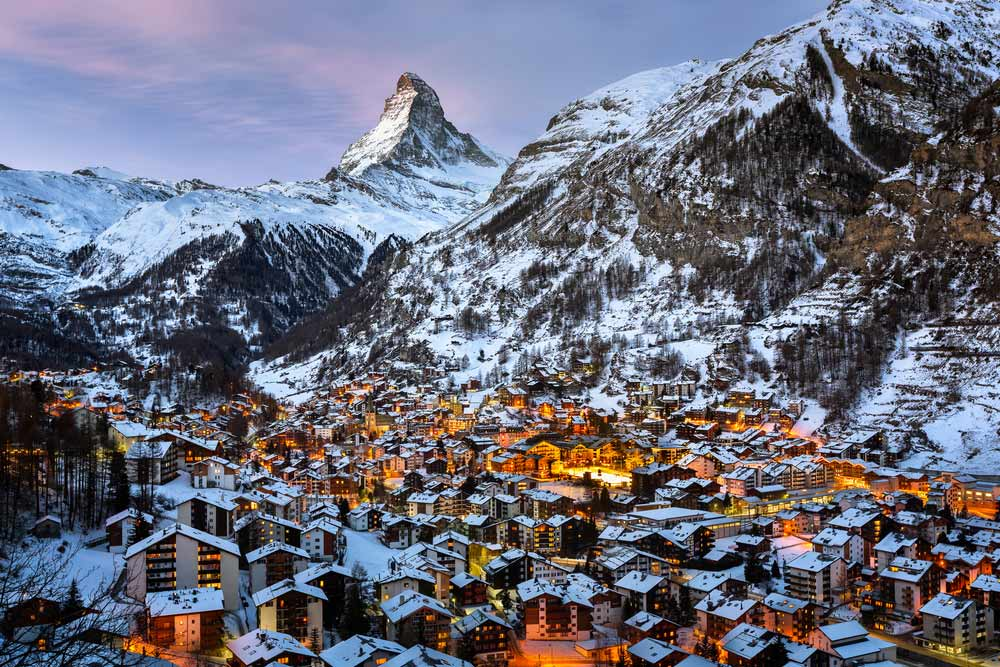
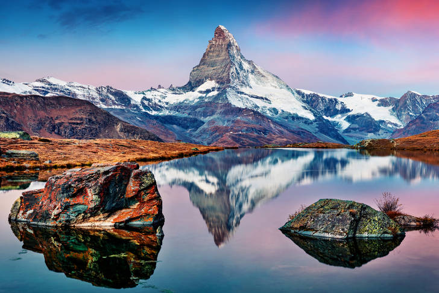
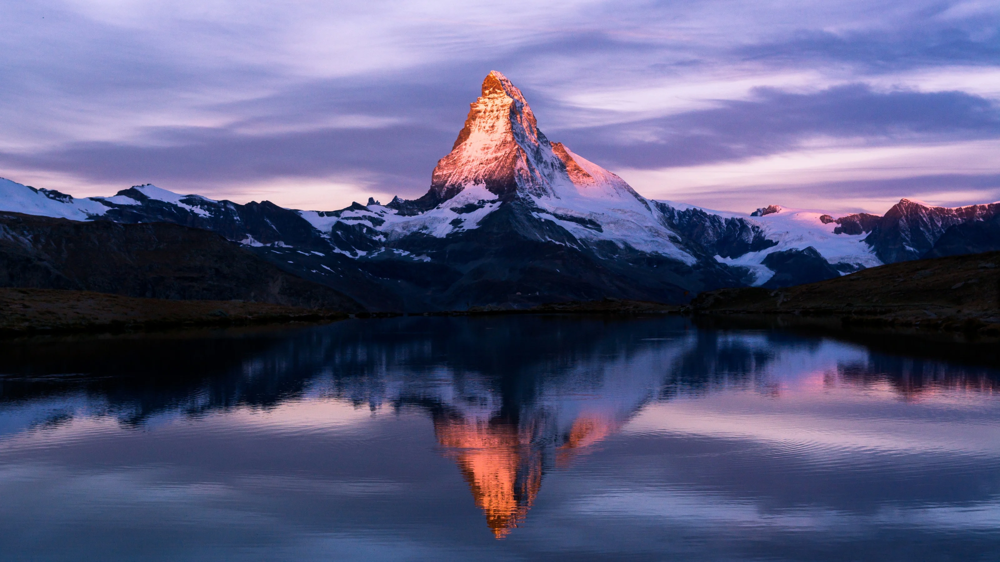
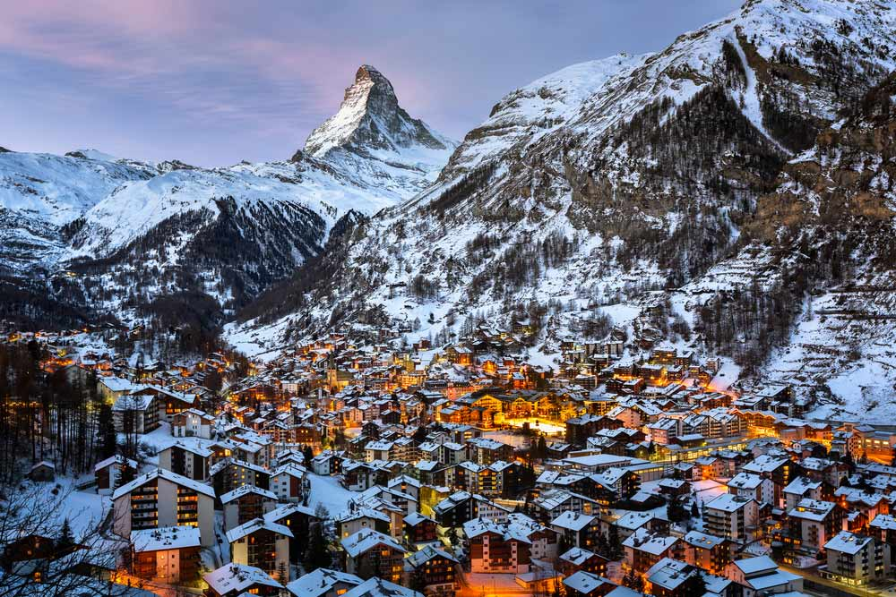
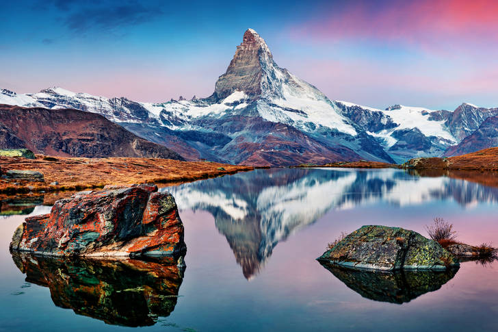
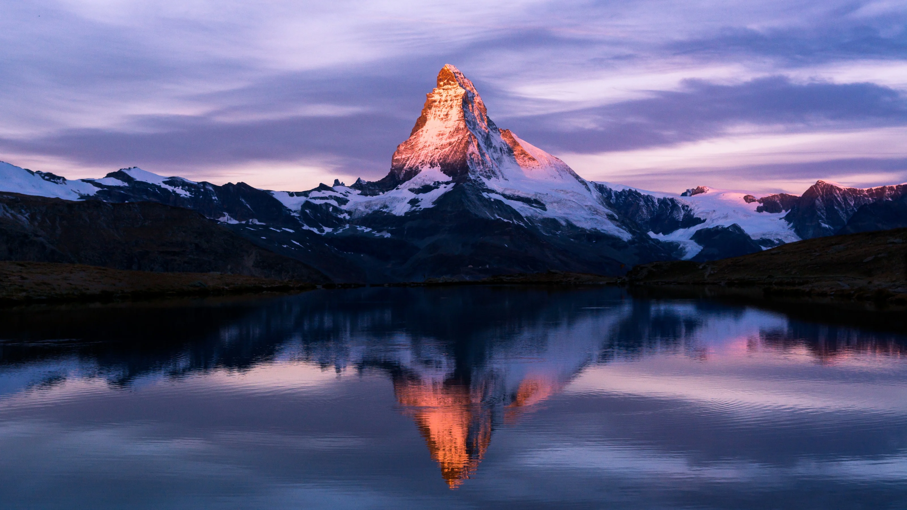

Mattehorn
Muntele simbol
Situat lângă Zermatt, la granița dintre Italia și Elveția în Alpii Pennini, este unul dintre cei mai vestiți și deosebiți munți din lume. Are forma unei piramide abrupte și înclinate, al cărui perete estic este aproape vertical și care se ridică la o altitudine de aproape 1000 de metri deasupra ghețarilor. Matterhorn face concureță tuturor vârfurilor de peste 8000 de metri din lume, fiind considerat cel mai fotografiat munte.
Pe lângă reunimitul munte, în Zermatt pot fi vizitate și alte puncte turistice interesante precum:
Calea ferată Gornergratbahn
Calea ferată Gornergrat este o linie de cale ferată cu tracțiune electrică care leagă Zermatt de Gornergrat în regiunea Monte Rosa.
Gestionat de compania feroviară privată elvețiană cu același nume, este a doua cea mai înaltă cale ferată din Europa , depășită doar de calea ferată Jungfrau care atinge o altitudine mai mare.
Ghetarul Gorner
Ghețarul Gorner este un ghețar de vale găsit pe partea de vest a masivului Monte Rosa, aproape de Zermatt , în cantonul Valais, Elveția. Are aproximativ 12,4 km lungime și până la 1,5 km lățime.
O caracteristică interesantă a acestui ghețar este Gornersee, un lac marginal de gheață în zona de confluență a Gorner- și Grenzgletscher. Acest lac se umple în fiecare an și se scurge vara, de obicei ca o viitură de lac glaciar. Acesta este unul dintre puținele lacuri glaciare din Alpi care prezintă acest tip de comportament.